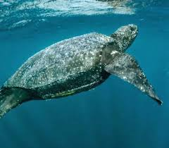
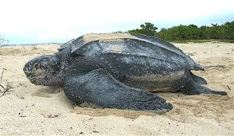
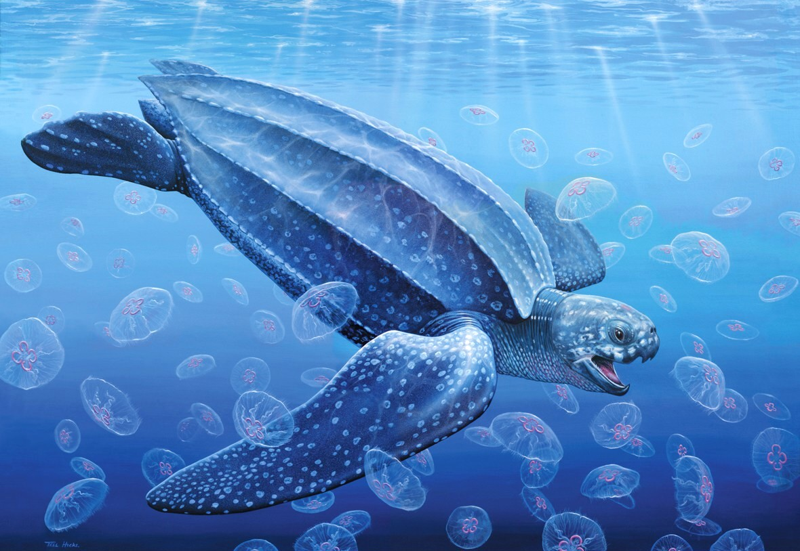

La **tortuga laúd** (*Dermochelys coriacea*) es la tortuga marina más grande del mundo y el cuarto reptil más grande. Se distingue por no tener un caparazón óseo duro, sino una coraza de piel gruesa, coriácea y flexible (de ahí su nombre). Son buceadores excepcionales, capaces de alcanzar profundidades de hasta 1,200 metros, y migran las distancias más largas de todos los reptiles marinos. Aunque están clasificadas como **Vulnerables** globalmente, algunas poblaciones del Pacífico están **en peligro crítico de extinción**. Sus principales amenazas son la captura incidental en pesquerías, la ingestión de plásticos (que confunden con medusas, su principal alimento) y la destrucción de sus sitios de anidación costeros.


